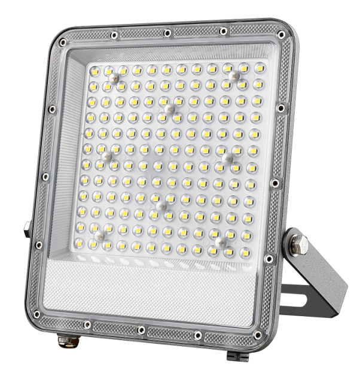
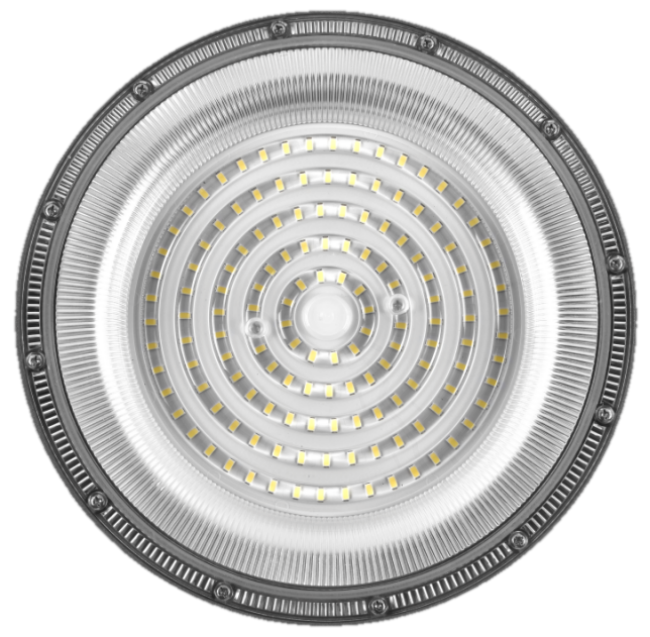

FL-YE-01W050V144V01 — a 50 W flood light on the YE-01 platform, lab-tested with our self-developed driver technology. Ship finished luminaires, or knocked-down kits for local assembly.
| Parameter | Specification |
|---|---|
| Part number | FL-YE-01W050V144V01 |
| Type | Flood Light · 50 W |
| Output | 144 V / 310 mA ±5 % |
| LED load | 24C3B · 6 V LEDs (72 × SMD2835) |
| Driver | Self-developed high-PF flyback (single-board) |
| Input | 100–440 Vac · 47–63 Hz |
| Efficiency @ 230 Vac | ≥ 91.4 % |
| PF / THD | 0.957 / 27.89 % |
| Surge | 4 kV |
| Driver board size | 132 × 134.5 mm |
Same platform behaviour as the high bay: constant current to about 290 Vac, then foldback. The fixture runs safely on a 440 V feeder but will not deliver its rated 50 W. On the 100 W version of this platform, measured output at 440 Vac settled near 38 W. We will run the equivalent curve for 50 W once a project wattage is fixed, so the number you quote is measured rather than extrapolated.
Asymmetric, in almost every facade and wall-wash case. A symmetric beam throws as much light into the sky and the neighbouring property as onto the surface you are lighting, which is both wasteful and the first thing a lighting consultant will object to. Symmetric optics still make sense for open yards and general area lighting where there is no surface to graze.
Useful throw depends more on beam angle than on wattage. With a narrow optic, 50 W will put usable light on a surface 20–30 m away; with a wide optic the same fixture is better used within 8–12 m. Because we do not publish lux grids for a reference design, tell us the distance, the mounting height and the target illuminance and we will specify the optic instead of guessing.
Three things, in order of effect: mount higher, use a narrower beam aimed below the horizontal, and add a shield or visor to the housing. Wattage is the last lever, not the first. If the pole also lights a road or neighbouring property, local light-trespass rules usually cap the upward component, so the optic and the aiming angle have to be chosen together.
Our 50 W flood light thermal soak at 33 °C ambient put the EE16 transformer winding at 93.4 °C at 265 Vac , with the driver ICs lower still. That is roughly 11 K cooler than the 100 W high bay on the same platform, which is what you would expect from half the throughput. In a hot climate, add your site ambient to that rise before deciding whether the headroom is enough.
IP65 as a baseline for wall and pole mounting under an eave; IP66 where the fixture takes wind-driven rain directly, which is most coastal and exposed sites. The cable entry, not the lens, is where water gets in when a fitting fails. Tell us the mounting orientation — horizontal, tilted or vertical — because it changes how water sits on the gasket.
You do, as the locally registered applicant for schemes such as BIS, SIRIM, TISI or SNI. We provide the test data, BOM and technical file your lab needs, and we answer their technical questions directly so the filing does not stall on us.
Yes. The LED board and the 132 × 134.5 mm driver board are separate assemblies, each held by screws and plug-in connectors. A failed driver is a board swap in minutes; the housing, gasket and optic stay in service.

Road & area lighting on the same verified driver platform.
View Details
